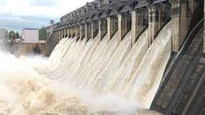
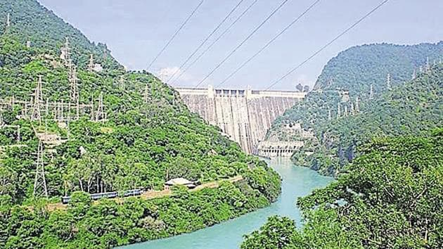
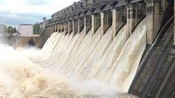
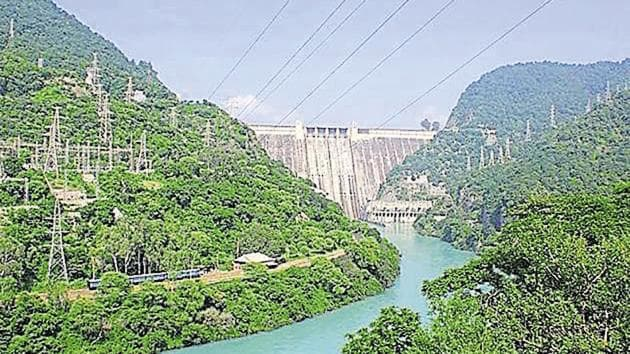

| S.no | Project | River | Related State | Their Uses |
|---|---|---|---|---|
| 1 | Bansgar Project | Son | Bihar , Uttar pradesh , Madhya pradesh | Aim of the project under AIBP is to provide additional annual irrigation of 1.50 Lakh ha in CCA of 2.32 Lakh ha. Thus, the total irrigation will be 3.47 Lakh ha, thereby increasing the intensity of irrigation from 85% to 150%
|
| 2 | Bargi Project | Bargi | Madhya Pradesh | The Right Bank canal of Rani Awanti Bai Sagar Project is khown as Bargi Diversion Project. It is an inter – Basin Project which will carry Narmada waters to Rewa and Satna district after crossing high ridges of Son-Tones Basin. The length of main canal is 197.4 KM, length of distributory is 255.165 KM and length of Distribution network is 2700 KM. After completion of this project irrigation potential of 2.45 Lakh Hact land shall be created to serve Jabalpur, Katni, Rewa and Satna District. Main Canal up to 104 KM has been completed by Jan-2010 and one KM of Tunnel has been driven up to Dec- 2012. It is proposed to provide 1164 L.Cum of water for Domestic and Industrial use. It is under consideration of Govt. of India to declare as National Project.  |
| 3 | Beas Project | Beas | Haryana , Punjab ,Rajasthan | The Beas Project has two units called Unit-I – BSL Project and Unit-II – Beas Dam. It was considered as the part of the Master plan and it was to construct to harness the waters of the three eastern rivers through the Satluj, the Beas and the Ravi for irrigation and power-production in an integrated manner.  |